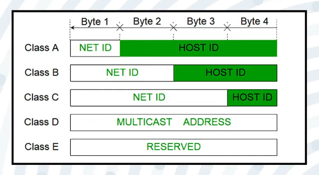

Personal Area Network [PAN]
The network of devices we use in our homes. All are connected to a router which provides similar private IPv4 addresses like 192.168.31.29, 192.168.250 and so on till 255.
Created by Pushkar Parate using Adarsh Tomar's Course
View my
Github
Get Cisco Packet Tracer for visualizing network connections and hardware.
The network of devices we use in our homes. All are connected to a router which provides similar private IPv4 addresses like 192.168.31.29, 192.168.250 and so on till 255.
Collection of PANs makes up a LAN network. Usually in a building of office. A wireless connection will make it a W-LAN. W for Wireless.
Collection of LANs makes up a CAN network. Usually in schools and organizations where 2-3 buildings of the campus are connected.
Collections of CANs is a MAN network. It is set up by ISPs of a city to connect them and configure together. It has range of a metro-city.
Literally the World. What we say the Internet is the WAN network.
When a storage pool is connected to a network it's a SAN network. It stores the data of the nodes or nodes can receive. It's like the cloud storage.
A configured network by an Admin over the Enterprise. Only employee devices can be connected and access this network.
When two networks are connected, hackers can spoof them or admin can view their data. For privacy a tunneled network can be created by VPN services.
It is a model where two devices are connected to each other without any SERVER which controls the transmission of data and sets protocols. Thus, two nodes are directly connected.
In this model, devices are connected to a central controlling device, SERVER, which controls the data transmission protocols.
A cable is passed on which the sides of cables are connected to nodes. Uses Broadcast Method.
A central device is placed where the nodes are connected. Uses Broadcast Method.
All nodes are in circle, for transmission, data passes through each in rotation. Uses Broadcast Method.
Hierarchically the nodes are set up.
Each node connects to each one. Its fastest but most expensive. Uses Unicast method.
A mix of topologies is a Hybrid one.
It is the card which provides interface for network connection to
devices. Installed in Motherboard. Contains the MAC and ARP resolver
cache. Can be wired or wireless. RJ-45 is most common Ethernet Cable
and port in NIC.
MAC is a alphanumeric unique address assigned to each NIC by the
manufacturer. ARP cache resolves IP to MAC address mapping.
Broadcast connection device. One input port and 8 or more output ports. Does not filter data and cannot be configured. Sends packets to all devices, so not secure but cheaper.
Intelligent, configurable, expensive version of a hub. Multiple ports from 8 to 64.
Strengthens signals over long distances.
Has input/output ports and provides wireless connectivity. Built into routers for sharing internet by ISP.
Wired device for routing data packets over large networks. Assigns private IPv4 addresses and converts to public IPs. Modern routers have Access Points and Switches integrated.
Dynamic Host Configuration Protocal [DHCP] servers are a replacement
to the old time BOOTP. It uses Port UDP 67 same as BOOTP. It
automatically assigns private IP addresses to devices in a LAN.
It provides the IP addresses dynamically on lease. But a Reservation
of IP can be made by configuring the DHCP server.
It is a set of functions when a device wants to connect to a DHCP server for a IP lease.
Automatic Private IP Addressing [APIPA] is a feature in Windows OS
where if DHCP server is not found, it assigns a private IP and
Subnet Mask.
It is a static and manual form where the Windows provides the IP
lease.
The IP range assigned is from 169.254.0.1 to 169.254.255.255 and A
Subnet Mask of 255.255.0.0 / 16.
It translates web addresses to IP cause thats what computer want to
connect to Servers.
A DNS server has a database of web addresses and their corresponding
IP addresses. It is its only work. We can use it using the
nslookup command to chek=ck your DNS server.
It is the IP address of the Router in a LAN network through which
data packets are sent to other networks.
It is the device which connects your LAN to other networks and is
'Default' because it is the first option looked upon when exiting.
One node can only send and other can only receive through the channel. Example: monitor output.
Both nodes can send and receive but in turns. Example: walkie-talkie.
Sending and receiving is simultaneous. Example: phone calls.
When data travels along wires it is in ANALOG FORM. After processing in computer, it becomes DIGITAL FORM (01010101).
Conversion of digital data to analog signals for transmission. Types: Unipolar, Polar, Bipolar.
1 → +V, 0 → 0V.
Concept:
Only one polarity is used.
Pros:
Simple, Cheap.
Cons:
DC component needed, Poor Sync.
Example:
TTL circuits.
Uses positive and negative voltages, thus has three levels: 1 0 -1.
Types: NRZ, RZ, Manchester.
Pros:
Better Sync, No DC Component needed.
Example:
Ethernet, USB.
Eliminates DC problem, maintains syncing.
Types:
AMI, Pseudo-Ternary.
Example:
T1/E1 lines.
There are three levels: +, 0, -. But the 1 is represented alternatively by + and - voltages. While 0 is by 0V.
It is the same as AMI but here 1 is treated 0 and 0 is treated as 1.
| Type | Voltage Levels | Example | Synchronization | DC Component | Usage |
|---|---|---|---|---|---|
| Unipolar | 0, +V | NRZ | Poor | High | Simple digital circuits |
| Polar | –V, +V | NRZ, RZ, Manchester | Good (esp. Manchester) | Low–None | Ethernet, USB |
| Bipolar | –V, 0, +V | AMI, Pseudo-ternary | Good | None | Telephone lines, older WANs |
Higher bandwidth → higher transmission rate.
Disturbance by unwanted electromagnetic signals.
When received signals differ from original due to attenuation, distortion, or noise.
Loss of signal strength over distance.
Loss of data due to frequency differences.
Addition of unwanted signals.
Physical cables for data transmission (Bounded Media).
Most used in telecommunication and Ethernet. Types: STP, UTP.
Family of connectors for telephone and Ethernet wiring.
Used for data, video, voice. Expensive, multiple layers to reduce interference.
Most common connector for coaxial cable.

Glass strands transmit light pulses. High speed, long distance. Used in global Internet backbone.
Also called Air Media. Uses electromagnetic waves.
Low frequency, penetrate walls. Used in radio, walkie-talkies. 20kHz – 300Hz
Straight line travel. Used for cellular, Wi-Fi, 3G/4G/5G. 1GHz – 1000GHz
High frequency, blocked by objects. Used in remote controls, night vision, motion detection. 300GHz – 400THz
It has 4 8-Bit Octets forming a 32 bit Unique Address assigned in a
Network. In each octet numbers range from 0-255.
This was introduced by IANA [Internet Assigned Numebers Authority] and
is also managed by them.
It is the part of the IP which does not change in a network and
identifies the network of computer.
192.168.32.225
It is the part which identifies the device in the network and two
devices in a network have different Host parts but same Network
Part.
It may vary and can be known using Subnet Masks.
192.168.32.225
It is what tells that which is Host Part and which is Network Part.
It can be also used to determine size of a network.
255.255.255.0 Usually for Private or Local Area
Networks
255.255.0.0 Usually for Bigger networks like
MAN
The 0 part will be Host Part in the IP Address. And 255 will be the
Network Part in IP Address.

| Class | Starting Bits | IP Range | Default Subnet Mask | # of Networks | # of Hosts per Network | Typical Use |
|---|---|---|---|---|---|---|
| A | 0 | 1.0.0.0 – 126.255.255.255 | 255.0.0.0 | 128 | 16,777,214 | Very large networks (big corps, ISPs) |
| B | 10 | 128.0.0.0 – 191.255.255.255 | 255.255.0.0 | 16,384 | 65,534 | Medium-sized networks (universities, midsize companies) |
| C | 110 | 192.0.0.0 – 223.255.255.255 | 255.255.255.0 | 2,097,152 | 254 | Small networks (typical home/small business LANs) |
| D | 1110 | 224.0.0.0 – 239.255.255.255 | N/A | N/A | N/A | Multicasting (one-to-many comms) |
| E | 1111 | 240.0.0.0 – 255.255.255.255 | N/A | N/A | N/A | Experimental, reserved for research |
127.0.0.0 to 127.255.255.255 is a range of Loop-Back IP's.
These are like WAN having significant
Range: 1.0.0.0 to 126.255.255.255.
Default Subnet Mask: 255.0.0.0.
Number of Networks: 126, Number of Host 16 Million
+
Used by: Very large organizations, ISPs, or
backbone providers.
These are like MAN having lesser
Range: 128.0.0.0 to 191.255.255.255.
Default Subnet Mask: 255.255.0.0.
Number of Networks: 16,384
Hosts: 65,000+
Used by: ISPs, government agencies like NASA or
ISRO.
These are your common LAN or PAN with low
Range: 192.0.0.0 to 223.255.255.255.
Default Subnet Mask: 255.255.255.0.
Number of Networks: Over 2 million
Hosts: 254
Used by: Small organizations and local networks.
Range: 224.0.0.0 to 239.255.255.255.
These are Reserved Multicasting IP Addresses used
by service providers or broadcasters. It does not require a subnet
mask since multicasting doesn’t rely on host-specific communication
— the data is broadcast to multiple recipients simultaneously.
Range: 240.0.0.0 to 255.255.255.254.
These do not need a subnet mask and are
Reserved for Research and Development purposes by
IANA.
Range: 127.0.0.0 to 127.255.255.255.
These IPs are used for communication within your own machine.
localhost:3000) to test code without putting it on
the internet.
127.0.0.1 confirms your TCP/IP stack is working.
127.0.0.1 to ensure they aren’t publicly accessible.
These addresses are not meant for networking but are used to maintain internal security and testing on your own system.
Address: 255.255.255.255
This is a
Reserved IP Address for Limited Broadcast — it
refers to "everyone" on the local network. It’s used to broadcast
messages to all hosts on a LAN. It is not a subnet mask or a valid
assignable IPv4 address.
255.255.255.255 asking for a DHCP server.
Range: 169.254.0.1 to 169.254.255.255
Subnet Mask: 255.255.0.0 (/16)
When a computer fails to contact a DHCP server, it automatically
assigns itself an IP in this range using APIPA. This allows limited
local communication without internet connectivity.
It is a 128 Bit Address and can produce more unique Addresses than
IPv4. Launched by IANA due to IPv4 Shortage. It is alphanumeric
address, for example, 2409:40e3:1b:668d:159d:2c0c:c221:fea6.
It does not have Class Categorization.